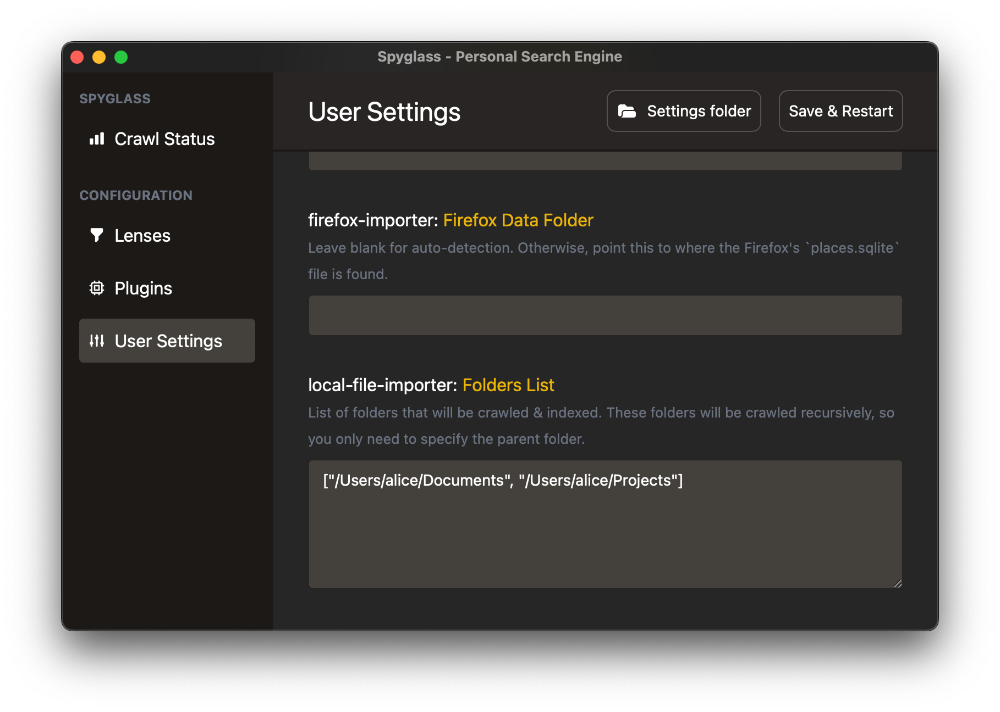

Indexing local files
NOTE: Currently local file indexing is limited to
.mdand.txtfiles. More file types will be added as we stabilize this feature.
Enabling the local indexer plugin
The local file index plugin is disabled by default. Navigate to the "Manage Plugins" item in the menubar dropdown to open up the plugin management interface.

Click on the "Enable" button under the "local-file-indexer" plugin to enable local file indexing.

Adding folders to index
The file indexer plugin will recursively walk through a folder & its' children to find files. Because of this, you'll only need to add the parent folder of what you want to index.
For example, if you want to index all the files under /Users/alice/Documents/projects
and /Users/alice/Documents/Obsidian Notes, you only need to add /Users/alice/Documents.
To add folders, navigate to the "User Settings" and scroll down to the local-file-importer: Folders List
setting. This takes an array of folder strings as seen below:

The list will be validated and an error will pop up if the folder does not exist.